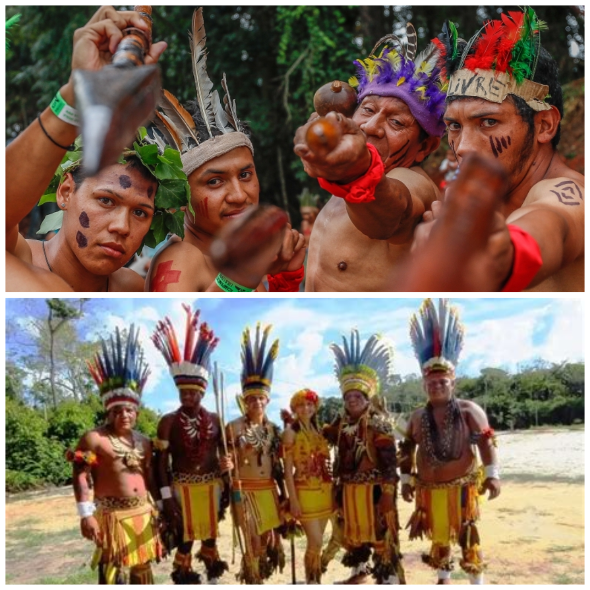

Kaingang: Cultura, História e Tradições:
Os Kaingang são um dos principais povos indígenas do sul do Brasil, habitando os estados do Paraná, Santa Catarina, Rio Grande do Sul e São Paulo. Pertencem ao tronco linguístico Macro-Jê e possuem uma cultura rica, marcada por um forte vínculo com a natureza e uma organização social complexa.
